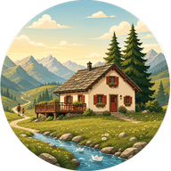

🚗 I tempi in auto sono reali
Calcolati con OSRM su OpenStreetMap, da Simöu porta a porta. Contano anche i ~15 minuti che servono solo per scendere a Olivone: è il pedaggio fisso di ogni gita. Quasi tutto il resto della valle si aggiunge a quello.

Olivone · Valle di Blenio · TicinoCosa fare quando siamo su, per gambe corte e gambe lunghe.
Niente che corrisponda. Prova ad alzare il tempo massimo in auto o ad azzerare i filtri.
Calcolati con OSRM su OpenStreetMap, da Simöu porta a porta. Contano anche i ~15 minuti che servono solo per scendere a Olivone: è il pedaggio fisso di ogni gita. Quasi tutto il resto della valle si aggiunge a quello.
Le schede della fascia più piccola dicono se il passeggino ci passa, dove si può accorciare e cosa c'è da guardare. Sotto i due anni lo zaino porta-bimbo apre molte più gite del passeggino: la maggior parte dei sentieri qui ha fondo sassoso.
Acqua e snack, crema solare, giacca impermeabile (in quota il tempo gira in fretta) e una torcia — serve davvero al tunnel della diga e all'Orrido del Sosto.
Capanna Dötra (1748 m), ristorante alla Diga del Luzzone, buvette del Parco Sarracino, Centro Pro Natura ad Acquacalda, Osteria del Polisport a Olivone, Cima Norma a Dangio.
Postbus Olivone–Luzzone, Bus Alpino per la Greina (luglio-ottobre), seggiovia del Nara, funicolare del Ritom, trenino Artù a Bellinzona. Diverse gite si fanno in salita col mezzo e in discesa a piedi.
Il Passo del Lucomagno chiude d'inverno: tutto quello che sta oltre Acquacalda diventa irraggiungibile. Le capanne di alta quota sono estive. Filtra per stagione prima di programmare.
Questa pagina resta consultabile anche offline dopo la prima visita, mappa esclusa. Scarica prima l'app delle cacce al tesoro e le tracce che ti servono.
La stella su una scheda la salva in Preferiti. Lì puoi trascinare le voci per metterle nell'ordine in cui vuoi farle, e copiare un link della lista da mandare a chi è in vacanza con te. Resta tutto su questo dispositivo.
Filtri e schede finiscono nell'indirizzo: puoi mandare a qualcuno esattamente la selezione che stai guardando, o una singola gita.